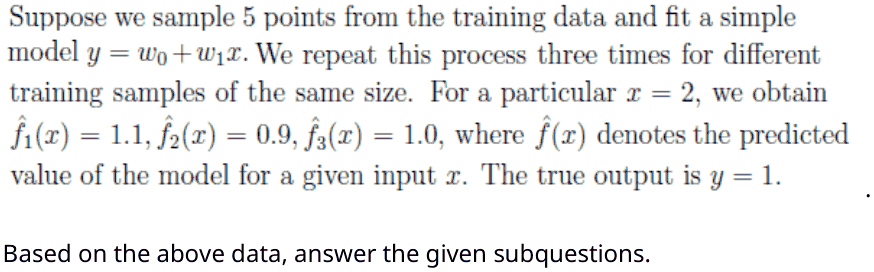
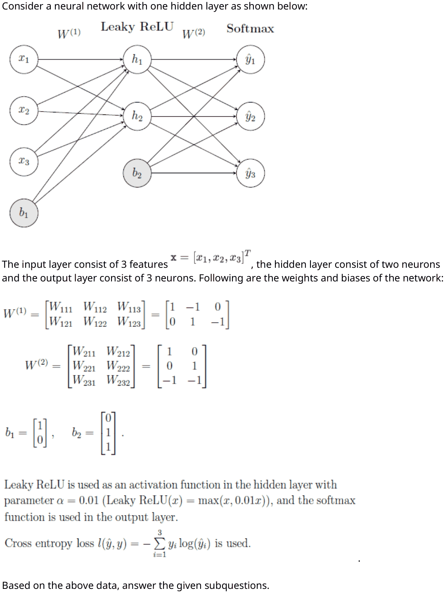

Deep Learning Quiz 2 · 2026 Term 1 — Study guide
- Time budget: ≈ 1 min per mark. Shape/parameter questions ≈ 1 min each once you have the formula; numeric optimiser traces ≈ 3 min.
- Answer-sheet marks: ✓ = recomputed by code and inside the official range · • = official key, explained by reasoning (concept question, not machine-checked).
- Order of attack: write the formula once, fill a small table, then read off the answers.
Q1–Q4Optimiser & dropout concepts9 marks
Lesson · Optimisers & learning-rate schedules
Update rules (g = ∇w, η = learning rate)
| method | state | update |
|---|---|---|
| Momentum | u = γu + η g | w ← w − u |
| NAG | same, gradient taken at the look-ahead point w − γu | fewer oscillations than momentum |
| AdaGrad | v = v + g² | w ← w − η g / (√v + ε) |
| RMSProp | v = βv + (1−β) g² | w ← w − η g / (√v + ε) |
| AdaDelta | v = βv+(1−β)g²; u = βu+(1−β)Δw² | Δw = −(√u/√v) g — no η at all |
| Adam | m = β₁m+(1−β₁)g; v = β₂v+(1−β₂)g² | w ← w − η m̂/(√v̂+ε), m̂ = m/(1−β₁ᵗ), v̂ = v/(1−β₂ᵗ) |
| AdaMax | Adam with the L∞ norm: u = max(β₂u, |g|) | w ← w − η m̂ / u |
| NAdam | Adam + Nesterov look-ahead |
Facts the paper keeps asking
- AdaGrad: v only grows ⇒ effective LR η/√v is monotonically non-increasing (can stay constant while g = 0). Sparse features have small accumulated v ⇒ their LR decays slowly; dense features decay fast.
- RMSProp: v can shrink (old gradients are forgotten) ⇒ effective LR can rise; it is not guaranteed non-increasing. It can still oscillate around the minimum because the LR does not vanish; sensitive to η₀.
- Adam = momentum + RMSProp. Without bias correction m, v start at 0 and are underestimated; since √v shrinks faster than m, the first steps are too large (m/√v ≈ 0.1 g / 0.0316|g| ≈ 3.2 for β=(0.9, 0.999)).
- Adaptive per-parameter LR: AdaGrad, RMSProp, AdaDelta, Adam, NAdam. Not adaptive: SGD, momentum, NAG (a single global η, even with decay schedules).
- Oscillation around the minimum: momentum, NAG (less), RMSProp, Adam. AdaGrad does not oscillate — it stalls instead.
Learning-rate schedules
- Step / exponential decay: global η shrinks on a schedule — still not adaptive per parameter.
- Cosine annealing with warm restarts: η follows a half-cosine down, then jumps back up; the periodic large η helps escape sharp minima.
- Cyclical triangular: η_t = η_min + (η_max−η_min)·max(0, 1 − |t/μ − 2⌊1 + t/2μ⌋ + 1|). Minimum at t = 0, 2μ, 4μ…, peak at μ, 3μ… Period = 2μ.
- Backtracking line search: shrink η until the sufficient-decrease condition J(w−ηg) ≤ J(w) − c·η‖g‖² holds — take the largest η that passes.
Speed recipe for numeric traces
- Write the update rule once; list t, g, state, new w in a table.
- Check the indexing convention: the passage often starts at t = 0 with v₋₁ = 0, so "after iteration 1" may mean w₁ and v₁ computed with the new gradient.
- Keep 3 decimals in intermediate values, as the paper says.
Lesson · Bias–variance & regularisation
Diagnosing from curves
| picture | diagnosis | cure |
|---|---|---|
| train ↓, val ≈ train, both low | good fit (low bias, low variance) | — |
| train ↓↓, val turns ↑ | overfitting = low bias, high variance | more data, L2, dropout, early stopping, augmentation |
| both plateau high | underfitting = high bias | bigger model, polynomial features, longer training |
| loss increases with epochs | learning rate too high | lower η |
- Bias² = (mean prediction − truth)²; Variance = mean (prediction − mean prediction)² over models trained on different samples. Test error ≈ bias² + variance + noise.
- More training data: variance falls, bias stays about the same (it is set by model capacity).
- Choosing λ: the value with the lowest validation loss (not training loss).
- Adding L2/L1 to an under-fitting model makes it worse; the fix is more capacity (extra hidden layers with non-linearity, polynomial features). A deep net without non-linearity is still linear.
Regularisers in one table
| technique | what it does |
|---|---|
| L2 (λ/2‖w‖²) | penalty ∝ w² ⇒ weight decay: w ← (1−ηλ)w − η∇L; minimiser w* = w_D*/(1+λ) for a symmetric quadratic. Loss with penalty ≥ plain loss. |
| L1 (λ‖w‖₁) | penalty ∝ |w| ⇒ sparse weights / feature selection |
| Dropout (keep p) | training: each unit kept with prob p, E[active] = n·p, 2ⁿ thinned sub-networks. Test: all units on, outputs scaled by p (or inverted-dropout: scale by 1/p in training). Per-layer p may differ; sparsity of weights is not implied. |
| Early stopping | stop when validation error stops decreasing and starts to rise |
| Data augmentation / noise at input / soft targets at output | soft target e.g. 0.9 / 0.025…: a probabilistic (non-0/1) label |
| Bagging k models | mse = V/k + (k−1)C/k. C = V (identical models) gives V; C = 0 gives V/k; minimum at C = −V (for k = 2); k→∞ limit is C. |
Not regularisers: activation functions, optimiser choice (Adam vs SGD).
Lesson · Activations, gradients & vanishing
| f | f′ | range of f′ | issues |
|---|---|---|---|
| sigmoid σ | σ(1−σ) | (0, 0.25] | saturates at both ends ⇒ vanishing gradient; not zero-centred ⇒ all weight updates of a layer share a sign (quadrants 1 & 3) |
| tanh | 1−tanh² | (0, 1] | saturates both ends, zero-centred |
| ReLU | 1 if x>0 else 0 | {0, 1} | no saturation for x>0, but dead neurons (gradient 0 for x<0 ⇒ stops updating) |
| Leaky ReLU | 1 / α (0.01, 0.1…) | {α, 1} | small non-zero slope keeps a gradient flowing — avoids dying |
| ELU | 1 for x>0; αeˣ for x≤0 | (0, 1] | smooth, no dead zone |
| Maxout | slope of the winning piece | learns its own shape, no saturation or death, 2× parameters |
Reasoning shortcuts
- Sigmoid with a huge |a|: σ′(a) ≈ 0 ⇒ gradient flowing back through the layer is killed (vanishing). Very large weights → saturation; very small weights → also tiny signals.
- Dead network trick: with all-ones weights and a negative input, a ReLU layer outputs 0, every later layer outputs 0, and the sigmoid output is σ(0) = 0.5.
- Gradient reaches W_k only if every later activation passes gradient: a ReLU with a ≤ threshold, or a saturated sigmoid (σ′ < 0.001 treated as 0) zeroes all earlier weight matrices.
- Prone to vanishing: sigmoid, tanh. Prone to dying: ReLU. Neither: Leaky ReLU, GELU, ELU, Maxout.
- Dropout and expectation: the expected hidden output is p·h, so E[ŷ] is computed with each unit scaled by p (keep probability), not by the drop probability.
Question data
Worked solution
Q1 · Nesterov + adaptive moments
NAdam (A). Adam alone has no look-ahead.
Q2 · Dropout facts
The keep probability can be chosen per layer (B). It does not give sparse weights; and a unit dropped in one iteration still gets its weights updated in later iterations when it is kept (it simply has no gradient in the iteration where it was dropped).
Q3 · Match optimisers to properties
| algorithm | property |
|---|---|
| 1 AdaGrad | (ii) scales LR by the total sum of past squared gradients |
| 2 RMSProp | (iii) exponentially decaying average of squared gradients |
| 3 Adam | (i) momentum + RMSProp, and (iv) bias correction |
| 4 AdaDelta | (v) unit-correcting update, no manual LR |
= option C.
Q4 · First layers barely update (softmax + ReLU net)
Dead ReLUs / vanishing gradients: use Leaky ReLU (A) or raise the learning rate (D). tanh also saturates; more output neurons do not help.
Answer sheet
| Q | asks for | answer | key | why / how |
|---|---|---|---|---|
| Q1 | Nesterov + adaptive moment estimation | A | • | NAdam |
| Q2 | dropout statement | B | • | dropout probability may differ per layer |
| Q3 | match optimisers | C | • | 1-ii, 2-iii, 3-i,iv, 4-v |
| Q4 | weights of early layers barely update | AD | • | Leaky ReLU, larger learning rate |
Q5Backprop through ReLU → linear4 marks
Lesson · Backprop through conv, pooling & small nets
Gradient routing rules
- Linear/sum (ŷ = Σ elements): gradient 1 to every element.
- Max-pool: the whole gradient goes to the argmax element of each window; all others get 0 (if the max is in another window cell, the answer for “H₀₀” is 0, not 1).
- Average-pool (k×k): every element of the window gets 1/k² of the upstream gradient.
- ReLU: pass the gradient where the pre-activation > 0, block it elsewhere. Sigmoid: multiply by σ′ = σ(1−σ).
- Conv weight w_ab: ∂L/∂w_ab = Σ over output cells (i,j) of (∂L/∂o_ij)·(active?)·X[i+a, j+b]. Weights that only ever meet zero pixels (or dead ReLU cells) get gradient 0.
- Chain of weights ŷ = ∏ wᵢ·x ⇒ ∂ŷ/∂w₁ = ŷ / w₁ and ∂L/∂w₁ = (ŷ − y)·∂ŷ/∂w₁ (check ReLU alive).
Squared / cross-entropy loss recipes
- L = ½(ŷ − y)² ⇒ ∂L/∂ŷ = ŷ − y. L = (ŷ−y)² ⇒ 2(ŷ−y).
- Softmax + cross-entropy: ∂L/∂z = ŷ − y. Cross-entropy with a soft label: L = −Σ y_noise,i · ln ŷ_i.
- SGD step: w ← w − η ∂L/∂w. L2 term adds λw to the gradient (weight decay).
- Plan: forward pass table (pre-activation a, activation h) → backward pass multiplying local derivatives right-to-left. Always keep the indicator 𝟙(a > 0) from the forward pass.
Convolution naming trap
The course (and frameworks) compute “convolution” as cross-correlation — slide the kernel as printed, no flipping. All traces below use that convention and reproduce the official keys.
Question data
Worked solution
Q5 · ReLU hidden unit, linear output, squared loss
- h₂ is the linear output: h₂ = w₂h₁ + b₂ (B true, A false).
- ∂L/∂w₁ = (ŷ − y)·w₂·𝟙(w₁x + b₁ > 0)·x ⇒ w₁ is unchanged if the ReLU is inactive (C), if w₂ = 0 (D), or if ŷ = y (F).
- x > 0 with w₁, b₁ > 0 means the ReLU is active, so w₁ does change (E false).
Answer sheet
| Q | asks for | answer | key | why / how |
|---|---|---|---|---|
| Q5 | true statements (B, C, D, F) | BCDF | • | ∂L/∂w₁ = (ŷ−y)·w₂·𝟙(a₁>0)·x |
Q6Padding and parameters3 marks
Lesson · CNN arithmetic: shapes, parameters, Inception
output depth = K (number of filters)
conv params = F·F·C_in·K (+ K biases only if the paper says so)
pool params = 0 FC params = n_in·n_out
“same” padding (S=1): P = (F−1)/2 → 7×7 needs P = 3
- Parameters do not depend on input width/height, stride or padding — only on kernel size, input depth and number of filters. A bigger image changes the feature-map volume, not the weights.
- Feature-map volume = W × H × D of the output tensor (not params!).
- Max-pool 2×2, stride 2 halves each side (floor). Average-pool outputs the mean of each window.
- Conv vs FC: FC on an n-pixel image with m neurons costs n·m weights; a small conv layer is far cheaper because weights are shared.
Inception module bookkeeping
- Four parallel branches see the same input; each branch's output has the same H×W (padding chosen so), depths add: concatenated depth = Σ branch depths.
- 1×1 “reduction” convs shrink depth before the expensive 3×3 / 5×5 — compare 3×3 on 256 channels (9·256·K) with 1×1 first (256·r + 9·r·K).
- Max-pool branch: 3×3, stride 1, padding 1 keeps H×W and depth; its params are 0; the following 1×1 conv does the work.
- For total params: do the branches one by one in a table (input depth, F, K, params) and add.
ResNet
A skip connection adds the layer input to its output element-wise: y = F(x) + x. Gradients flow through the identity path, easing vanishing gradients in very deep nets.
Question data
Worked solution
params of both = 5·5·3·64 = 4800 ⇒ difference = 0
Padding changes the feature-map size, never the number of weights.
Answer sheet
| Q | asks for | answer | key | why / how |
|---|---|---|---|---|
| Q6 | parameter difference between C₁ and C₂ | 0 | ✓ | padding does not affect parameters |
Q7Backtracking line search3 marks
Question data
Worked solution
Q7 · Largest step size satisfying J(w+) ≤ J(w) − 10η
| η | actual ΔJ | required ΔJ ≤ −10η | passes? |
|---|---|---|---|
| 1.0 | +5 | -10 | no |
| 0.8 | -4 | -8 | no |
| 0.4 | -6 | -4 | yes |
| 0.1 | -0.5 | -1 | no |
Largest passing η = 0.4.
Answer sheet
| Q | asks for | answer | key | why / how |
|---|---|---|---|---|
| Q7 | backtracking step size | 0.4 | ✓ | 0.4: −6 ≤ −4 ✓; 0.8: −4 ≤ −8 ✗ |
Q8–Q9Bias and variance of a fitted line at x = 24 marks
Question data

Worked solution
| quantity | formula | value |
|---|---|---|
| mean prediction f̄(2) | (1.1+0.9+1.0)/3 | 1 |
| Bias | f̄ − y | 0 |
| Variance | mean (f̂ᵢ − f̄)² | 0.0067 |
Answer sheet
| Q | asks for | answer | key | why / how |
|---|---|---|---|---|
| Q8 | bias | 0 | ✓ | mean prediction equals truth |
| Q9 | variance (4 d.p.) | 0.0067 | ✓ | (0.1² + 0.1² + 0)/3 |
Q10–Q12Forward pass, softmax cross-entropy and L210 marks
Question data

Worked solution
| layer | computation | result |
|---|---|---|
| a⁽¹⁾ = W⁽¹⁾x + b₁ | [1−1+0+1, 0+1−0+0] | [1.0, 1.0] |
| h = LeakyReLU(a⁽¹⁾) | both positive ⇒ unchanged | [1.0, 1.0] |
| z = W⁽²⁾h + b₂ | [1+0, 0+1+1, −1−1+1] | [1.0, 2.0, -1.0] |
| ŷ = softmax(z) | e^z / Σ e^z | [0.2595, 0.7054, 0.0351] |
| loss = −ln ŷ₂ | y = [0,1,0] | 0.349 |
Q11 · L2-regularised loss (λ = 0.05)
‖w‖² = Σ W⁽¹⁾² + Σ W⁽²⁾² = 4 + 4 = 8 (biases excluded as defined). L = (λ/2)‖w‖² + ℓ = 0.025·8 + 0.3490 = 0.549.
Q12 · Facts
- L(w) = penalty + ℓ ≥ ℓ since the penalty ≥ 0 (A).
- SGD with L2: w ← (1 − ηλ)w − η∇ℓ — that is weight decay (C).
- Gradient updates are not “larger” in general (B false); as λ → ∞, ‖w‖ → 0, it does not increase (D false).
Answer sheet
| Q | asks for | answer | key | why / how |
|---|---|---|---|---|
| Q10 | forward pass loss (2 d.p.) | 0.35 | ✓ | −ln softmax(z)₂ |
| Q11 | regularised loss | 0.55 | ✓ | ℓ + 0.025·8 |
| Q12 | correct statements (A, C) | AC | • | penalty ≥ 0; L2 = weight decay |
Q13–Q15Bottleneck vs Inception module7 marks
Question data

Worked solution
| module | layer | params |
|---|---|---|
| A (serial) | 1×1, 128→32 | 4096 |
| A (serial) | 3×3, 32→128 | 36864 |
| A | total | 40960 |
| B (parallel) | path 1: 1×1, 128→32 | 4096 |
| B (parallel) | path 2: 3×3, 128→128 | 147456 |
| B | total | 151552 |
Module B concatenates 32 + 128 = 160 channels (matches the figure). Module A first shrinks 128 → 32 channels with a 1×1 conv, which makes the 3×3 conv 4× cheaper: a bottleneck (B).
Answer sheet
| Q | asks for | answer | key | why / how |
|---|---|---|---|---|
| Q13 | parameters of Module A | 40960 | ✓ | 128·32 + 9·32·128 |
| Q14 | parameters of Module B | 151552 | ✓ | 128·32 + 9·128·128 |
| Q15 | role of the 1×1 conv in Module A (B) | B | • | bottleneck: reduces cost of the following 3×3 |